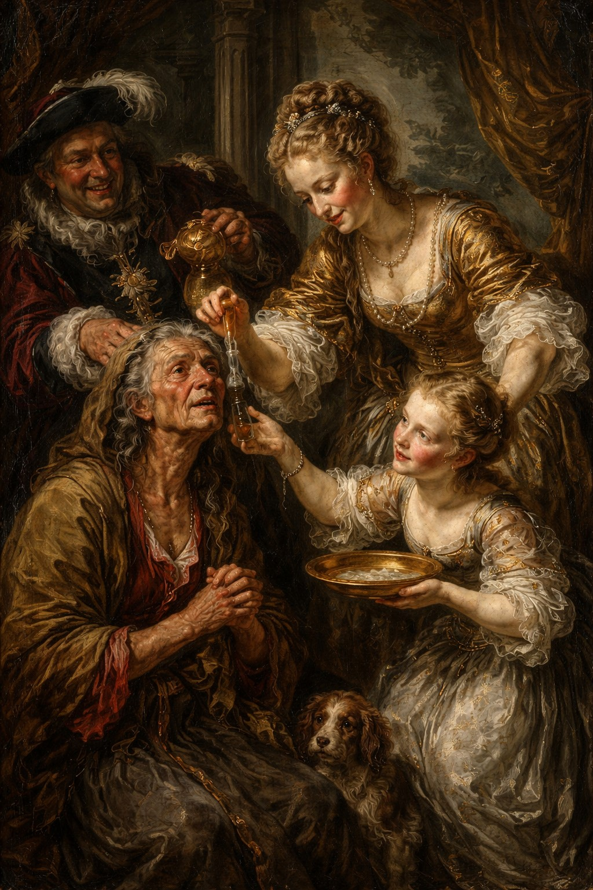
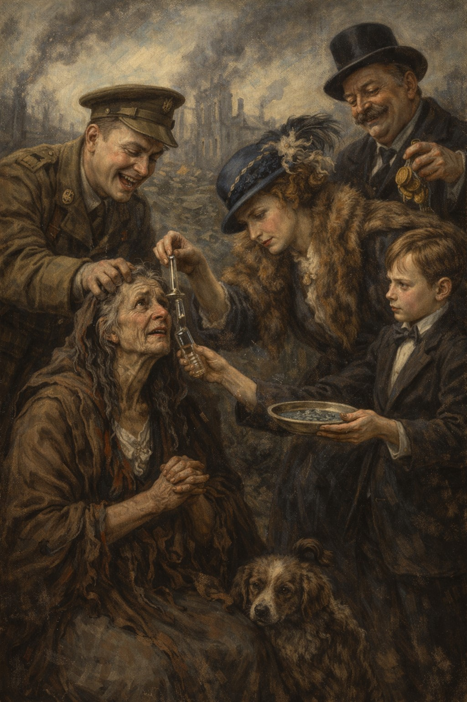
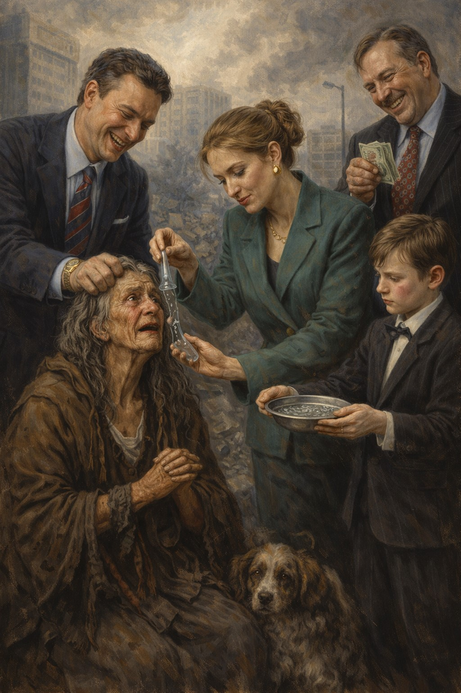
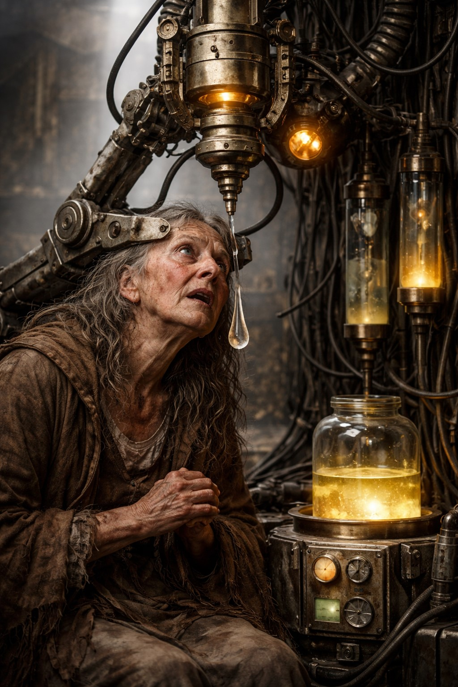

Founded in the late 17th century by an obscure but immensely wealthy Eastern European noble family,
Gypsy Tears began as a fringe alchemical venture rooted in folklore and mysticism. The founding premise
was simple yet macabre: that the tears of marginalized wanderers—believed at the time to possess latent
magical properties—could be harvested, refined, and harnessed for influence, longevity, and unseen
advantage.


Industrialization
From whispered ritual to systemized control
What started as a clandestine, almost mythic operation evolved over centuries into a tightly controlled,
vertically integrated enterprise. Remaining entirely family-owned across generations, the company has
prided itself on secrecy, continuity, and an unwavering adherence to its founding doctrine.
While early “collection methods” were crude and opportunistic, the organization gradually transitioned
into more systematized and industrialized processes—streamlining acquisition, storage, and distribution
with near-clinical efficiency.
Modernization
Cold precision behind a corporate mask
By the 20th century, Gypsy Tears had shed much of its folkloric veneer and adopted the outward structure
of a modern corporation—albeit one operating in the shadows. Internal innovations focused on extraction
technology, preservation techniques, and scaling production without diluting the “potency” of its core
resource.
The result is a business that blends archaic superstition with cold, mechanical precision.


Legacy
A myth that never quite disappears
Today, Gypsy Tears exists as a legacy entity—part myth, part enterprise—rumored to serve an elite,
discreet clientele. Its operations remain opaque, its leadership unchanged in bloodline, and its product
positioned somewhere between luxury commodity and occult artifact.
Whether viewed as allegory, dark satire, or whispered truth, the company endures as a symbol of
generational power refined through centuries of adaptation.